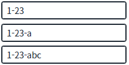
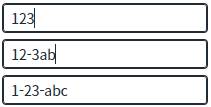
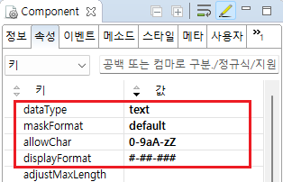

Input에 숫자 또는 영문을 입력하면 '#-##-###' 형식으로 마스크를 설정하고, 마스크의 방향을 지정한 예제입니다.
이 예제는 아래의 속성을 사용하여 구현되었습니다.
dataType: 입력 값의 데이터 타입
displayFormat: 입력 값에 적용할 포맷
maskFormat: 마스킹이 적용되는 방향
- displayFormat은 displayFormatter와 동시적용이 불가합니다.
마스크를 왼쪽에서 오른쪽 방향으로 적용
마스크를 오른쪽에서 왼쪽 방향으로 적용
예제 영역 '(기본 설정) 마스크를 왼쪽에서 오른쪽 방향으로 적용'에서 테스트합니다.1
STEP 1: 값을 입력하고 실행 결과를 확인합니다.
Input에 '123abc'를 입력하면 입력 중 왼쪽에서 오른쪽으로 마스킹이 적용되는 것을 확인할 수 있습니다. (displayFormat에 설정된 "#-##-###" 형식으로 왼쪽부터 값이 채워나가집니다.)
Example 1.Result
입력: 1 | 표시: 1 입력: 12 | 표시: 1-2 입력: 123 | 표시: 1-23 입력: 123a | 표시: 1-23-a 입력: 123abc | 표시: 1-23-abc
Image 1.브라우저(Chrome) 실행 예시

예제 영역 '마스크를 오른쪽에서 왼쪽 방향으로 적용'에서 테스트합니다.1
STEP 1: 값을 입력하고 실행 결과를 확인합니다.
Input에 '123abc'를 입력하면 입력 중 오른쪽에서 왼쪽으로 마스킹이 적용되는 것을 확인할 수 있습니다. (displayFormat에 설정된 "#-##-###" 형식으로 오른쪽부터 값이 채워나가집니다.)
Example 2.Result
입력: 123 | 표시: 123 입력: 123a | 표시: 1-23a 입력: 123ab | 표시: 12-3ab 입력: 123abc | 표시: 1-23-abc
Image 2.브라우저(Chrome) 실행 예시

1
Input의 속성을 정의합니다.
[필수] dataType
[default: text, number, float, date, time, bigDecimal,euro] 입력 값의 데이터 타입
[필수] displayFormat
화면에 표시할 값을 가공할 메소드명을 설정합니다. displayFormat 속성과 동시에 설정할 수 없습니다.
[필수] maskFormat
[default: ""] jQuery Mask Plugin과 유사한 기능을 제공하며 '#'을 입력 값으로 바꾼다.
default: displayFormat에 설정된 포맷을 왼쪽부터 적용한다.
reverse: displayFormat에 설정된 포맷을 오른쪽부터 적용한다.
applyFormat은 항상 all로 적용된다.
applyFormat과는 다르게 DataCollection에는 maskFormat이 적용된 값이 들어가며, getValue API 호출 시에도 maskFormat이 적용된 값이 반환된다.
displayFormat 속성 예시) ###-###-####, ##-###
dataType 속성은 text와 number를 지원하며, number일 경우 0으로도 마스킹이 가능하다. (#은 입력할 때 표시되지 않지만, 0은 입력할 때 표시됨)
필수 속성: displayFormat, dataType
Image 3.웹스퀘어 스튜디오의 Component View - 속성 설정 예시

Example 3.Source
<!-- input 의 소스 본문 예시 --> <xf:input displayFormat="#-##-###" maskFormat="default" dataType="text"> </xf:input>
dataType
displayFormat
maskFormat